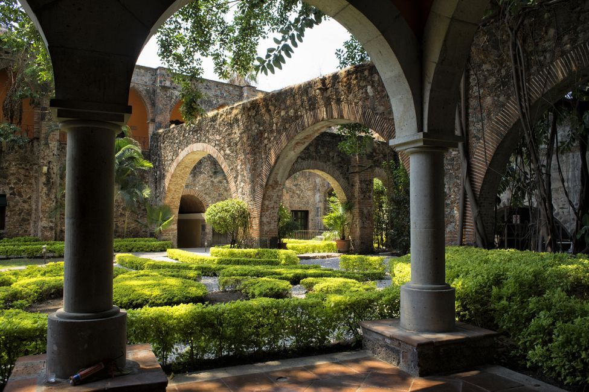
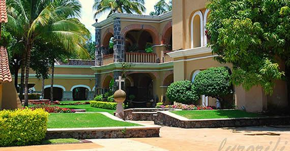

📸 Galería de Imágenes


🏛️ Entorno Histórico y Experiencia
La Hacienda San Antonio El Puente es uno de los legados históricos más fascinantes de Morelos, cuyos orígenes de tenencia de la tierra se remontan al año 1592. Para 1643 obtuvo formalmente la licencia para operar como trapiche, dando inicio a más de dos siglos y medio de producción ininterrumpida de caña de azúcar. Durante su época de mayor esplendor, la propiedad llegó a abarcar más de 5,000 hectáreas y se consolidó como un referente tecnológico en la región al convertirse en la primera hacienda de Morelos en contar con energía eléctrica, la cual generaban aprovechando la fuerza de su propio e histórico acueducto. Tras el reparto agrario derivado de la Revolución Mexicana, el casco arquitectónico se preservó y sirvió incluso como set cinematográfico de la época de oro del cine mexicano, siendo escenario de películas de figuras como Pedro Infante.
En la actualidad, este magnífico monumento colonial ha sido totalmente restaurado y es operado de forma impecable como un exclusivo hotel resort y spa de nivel internacional. El diseño respeta profundamente el espíritu de su época, integrando sus ancestrales muros de piedra viva, jardines botánicos cubiertos de vegetación y majestuosos arcos de época en una experiencia de hospedaje señorial, de descanso y de alta gastronomía.